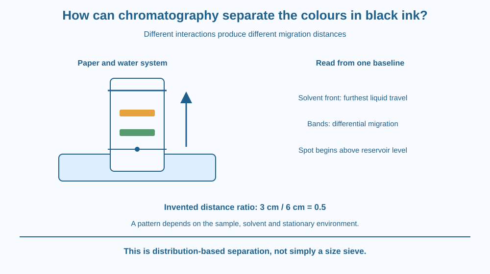

Explain why a suitable black ink can separate into coloured bands on paper. Identify the mobile phase, stationary material and differential migration. Distinguish chromatography from a mesh sorting particles by size and recognise that one unsplit ink does not invalidate the method.
A dot of washable black ink sits on paper above a shallow water level. As water moves upward, coloured regions may spread to different heights. The original dot looked like one colour, but its components can behave differently during travel.
Why does one component remain lower while another moves farther? The answer is not simply that a small dye fits through holes that a large dye cannot. Components spend different amounts of time associated with the moving liquid and the stationary surroundings.
The separation reveals different migration behaviour within a mixture.
Chromatography separates mixture components through differences in their distribution between moving and stationary environments. In a simple paper demonstration, water acts as the mobile phase, while the paper and its associated stationary environment influence retention.
The water moves through the paper's small spaces by capillary action. Dissolved ink components can travel with it. That transport alone would not necessarily separate them if every component interacted identically with the system.
Different dyes can vary in solubility in the moving liquid and in how strongly they associate with stationary material. A component that spends more of its time moving with the liquid generally migrates farther during the same run than one retained more strongly.
The result is differential migration. Components can form separate bands or spots even when the original ink looked uniform. The technique does not require a chemical reaction converting black dye into newly created colours.
The starting spot should be above the initial solvent surface. If submerged, much of the ink may dissolve directly into the reservoir rather than begin a controlled path along the paper. A small spot helps avoid broad overlapping bands.
Mark the starting line with pencil rather than another soluble ink. The line is a reference and should not add extra migrating dye. Record the solvent front, the furthest visible position reached by the liquid, before the wet boundary becomes hard to identify.
A simple migration ratio compares a component's travel distance from the baseline with the solvent front's travel distance. For invented distances of three and six centimetres, the ratio is 0.5. This dimensionless comparison is useful only with appropriate conditions and careful measurements.
A band's position is not a universal chemical identity card. Solvent, paper, temperature, sample amount and other conditions affect the pattern. Some inks contain components unsuitable for water or may not separate visibly in a brief run. A negative-looking result must be reported honestly rather than painted into the expected picture.
Draw a moving walkway beside many stopping places. Different travellers spend different amounts of time paused at those places, so they cover different total distances even though the walkway moves at one rate.
The walkway represents the mobile phase, and stopping represents interaction with the stationary environment. The analogy captures retention time, not human decision-making or literal hooks catching every molecule.
Then draw two dye paths starting at one baseline. Keep the same solvent front for both, but give the dyes different migration distances. The shared starting point and run conditions make their relative movement interpretable.
The SVG shows a strip with a pencil baseline above the solvent reservoir, an upward solvent front and separated coloured bands. Distances are measured from the same baseline, not from the lower paper edge.
A side panel contrasts a component spending more time in the moving phase with one more strongly retained. The diagram labels this as a distribution model rather than a simple size sieve.
The colours and band positions are illustrative. They do not guarantee that every black pen contains those dyes or that a real classroom run will produce the same heights in five minutes.

Chromatographic methods help analyse mixtures in laboratories, though professional instruments can differ greatly from paper strips. Their shared principle is that components interact differently with moving and stationary environments.
In a school demonstration, washable pens are more suitable for a water-based attempt than assuming every permanent marker will work. The ink source and paper should be recorded so another group can understand the result.
This lesson uses water only. It does not require alcohol, fuel, cleaning solvent or an unknown chemical. A simple safe trial is enough to distinguish separation from the claim that one uniform-looking colour must be one pure substance.
Use a paper strip torn from suitable absorbent paper, a pencil, a washable pen and a shallow cup of room-temperature water. Ask an adult before using household materials. Keep the ink away from clothing and do not taste the water.
Five minutes may show only an early stage. Report incomplete travel or no visible split without inventing bands. The activity is not a complete identification test for unknown substances.
Why would two components with similar retention be difficult to distinguish on a short strip? Consider overlapping bands rather than assuming the original ink must contain only one substance.
Now change the solvent in a thought experiment. Explain why the pattern could change even if the ink stayed the same. A migration result belongs to a specified system, not to the sample alone.
What is the mobile phase in the water-and-paper example?
Answer: A — The mobile phase carries dissolved components through the paper system.
Why can dyes reach different heights?
Answer: B — Different distributions between moving and stationary environments produce differential migration.
Invented dye and solvent-front distances are 3 cm and 6 cm. What is their ratio?
Answer: C — Dividing dye travel by front travel gives 3 divided by 6, or 0.5.
Write an observation card recording paper, ink, solvent, starting line, run duration and solvent-front position. Add a sketch of the actual outcome rather than a predicted ideal pattern.
Explain why the initial spot belongs above the reservoir and why one migration ratio does not prove a universal identity. Use the invented three-over-six example only as arithmetic, clearly separate from any measured trial.
A uniform-looking colour can conceal several components, but an unsplit spot does not prove purity either. Separation depends on both the mixture and the chosen system. The same method that reveals hidden complexity also teaches a limit: what you fail to separate may still be more than one substance.
Chromatography separates components through different migration in moving and stationary environments; the pattern depends on the sample and the chosen conditions together.